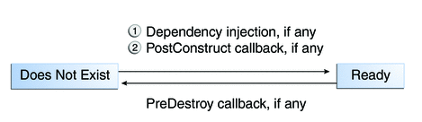

The Life Cycles of Enterprise Beans
An enterprise bean goes through various stages during its lifetime, or life cycle. Each type of enterprise bean (stateful session, stateless session, singleton session, or message-driven) has a different life cycle.
The descriptions that follow refer to methods that are explained along with the code examples in the next two chapters. If you are new to enterprise beans, you should skip this section and run the code examples first.
The Life Cycle of a Stateful Session Bean
Figure 14-3 illustrates the stages that a session bean passes through during its lifetime. The client initiates the life cycle by obtaining a reference to a stateful session bean. The container performs any dependency injection and then invokes the method annotated with @PostConstruct, if any. The bean is now ready to have its business methods invoked by the client.
Figure 14-3 Life Cycle of a Stateful Session Bean

While in the ready stage, the EJB container may decide to deactivate, or passivate, the bean by moving it from memory to secondary storage. (Typically, the EJB container uses a least-recently-used algorithm to select a bean for passivation.) The EJB container invokes the method annotated @PrePassivate, if any, immediately before passivating it. If a client invokes a business method on the bean while it is in the passive stage, the EJB container activates the bean, calls the method annotated @PostActivate, if any, and then moves it to the ready stage.
At the end of the life cycle, the client invokes a method annotated @Remove, and the EJB container calls the method annotated @PreDestroy, if any. The bean’s instance is then ready for garbage collection.
Your code controls the invocation of only one life-cycle method: the method annotated @Remove. All other methods in Figure 14-3 are invoked by the EJB container. See Chapter 29, Resource Connections for more information.
The Life Cycle of a Stateless Session Bean
Because a stateless session bean is never passivated, its life cycle has only two stages: nonexistent and ready for the invocation of business methods. Figure 14-4 illustrates the stages of a stateless session bean.
Figure 14-4 Life Cycle of a Stateless Session Bean
The EJB container typically creates and maintains a pool of stateless session beans, beginning the stateless session bean's life cycle. The container performs any dependency injection and then invokes the method annotated @PostConstruct, if it exists. The bean is now ready to have its business methods invoked by a client.
At the end of the life cycle, the EJB container calls the method annotated @PreDestroy, if it exists. The bean’s instance is then ready for garbage collection.
The Life Cycle of a Singleton Session Bean
Like a stateless session bean, a singleton session bean is never passivated and has only two stages: nonexistent and ready for the invocation of business methods.
Figure 14-5 Life Cycle of a Singleton Session Bean
The EJB container initiates the singleton session bean life cycle by creating the singleton instance. This occurs upon application deployment if the singleton is annotated with the @Startup annotation The container performs any dependency injection and then invokes the method annotated @PostConstruct, if it exists. The singleton session bean is now ready to have its business methods invoked by the client.
At the end of the life cycle, the EJB container calls the method annotated @PreDestroy, if it exists. The singleton session bean is now ready for garbage collection.
The Life Cycle of a Message-Driven Bean
Figure 14-6 illustrates the stages in the life cycle of a message-driven bean.
Figure 14-6 Life Cycle of a Message-Driven Bean
The EJB container usually creates a pool of message-driven bean instances. For each instance, the EJB container performs these tasks:
If the message-driven bean uses dependency injection, the container injects these references before instantiating the instance.
The container calls the method annotated @PostConstruct, if any.
Like a stateless session bean, a message-driven bean is never passivated, and it has only two states: nonexistent and ready to receive messages.
At the end of the life cycle, the container calls the method annotated @PreDestroy, if any. The bean’s instance is then ready for garbage collection.